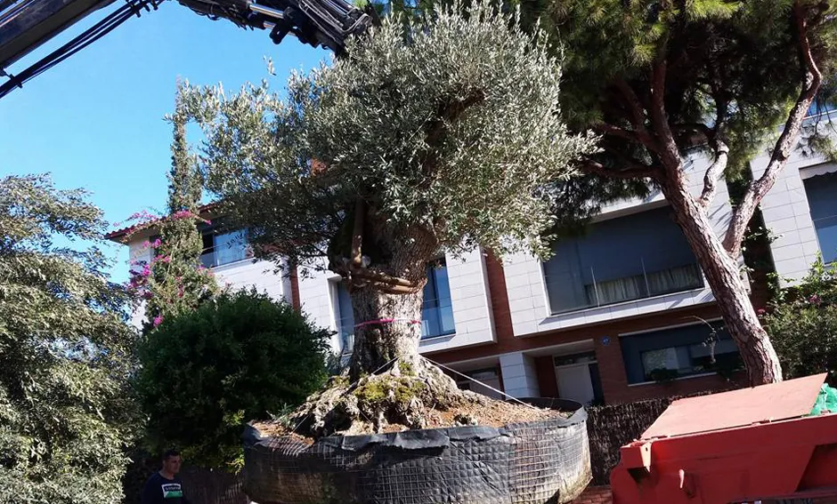
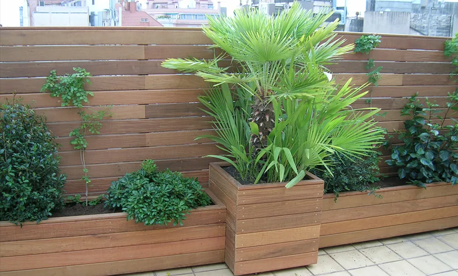
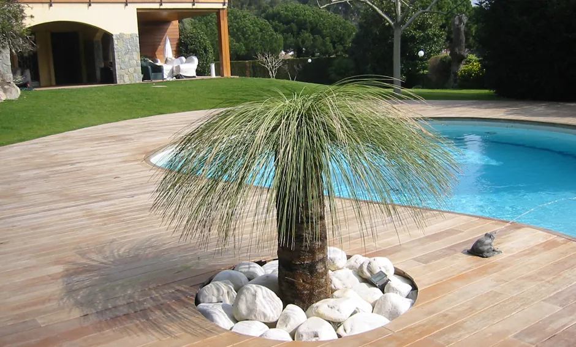

Proyectamos
Cada espacio, su jardínAplicamos técnicas como el acondicionamiento del suelo, el riego, la iluminación, las plantas o los elementos de agua para que cada espacio, con el paso del tiempo, sea más bello.

Los proyectamos, los construimos y los mantenemos. Zonas verdes y de ocio, zonas comunes y deportivas.
Quiero más información
Mantenimiento integral de zonas verdes y de ocio, zonas comunes y zonas deportivas.
El seguimiento y control semanal de un jardín forma parte habitual de la tarea de mantenimiento, y es clave para mantenerlo sano, detectar y tratar cualquier tipo de enfermedad, problemas con el riego, etc.
Aplicamos técnicas como el acondicionamiento del suelo, el riego, la iluminación, las plantas o los elementos de agua para que cada espacio, con el paso del tiempo, sea más bello.
Contamos con los recursos de todas las labores de que consta una obra; así organizamos y coordinamos los trabajos para conseguir el mejor resultado final.
Siembra, abonado, escarificado, corte de césped, eliminación de malas hierbas, mantenimiento de árboles —poda, limpieza y abonado—, siembras anuales y periódicas.





